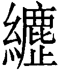
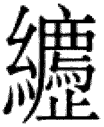
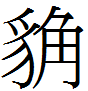
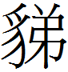
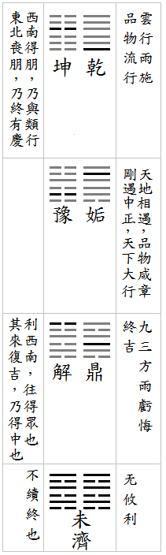

解卦 雷水解
解，利西南，无所往，其來復吉；有攸往，夙吉。初六，无咎。九二，田獲三狐，得黃矢，貞吉。六三，負且乘，致寇至，貞吝。九四，解而拇，朋至斯孚。六五，君子維有解，吉，有孚于小人。上六，公用射隼于高墉之上，獲之，无不利。
【卦名】
今本：解 帛書：解 歸藏：荔 上博簡：繲 清華簡：或 海昏：解
《說文》：「解，判也，从刀判牛角。一曰解廌，獸也。」
根據《說文》，解字有兩種可能的解釋，一是判。判是用刀子將東西一分為二，取分解、拆解之義。如《莊子·養生主》的「庖丁解牛」，《左傳》宣公四年的「宰夫解黿」。
二是廌獸，一種能分辨善惡的獨角獸聖。《說文》廌部說：「解廌，獸也，似山牛，一角。古者決訟，令觸不直。象形，从豸省。」段玉裁注說：「《神異經》曰：東北荒中有獸，見人鬥則觸不直，聞人論則咋不正，名曰獬豸。《論衡》曰：獬豸者一角之羊，性識有罪。臯陶治獄，有罪者令羊觸之。按古有此神獸，非必臯陶賴之聽獄也。《廣韵》曰：《字林》、《字樣》作解廌，《廣雅》作，陸作獬豸。陸謂陸法言切韵也。廌與解曡韵，與豸同音通用。廌能止不直，故古訓為解。《左傳》宣十七年：庶有廌乎。杜注：廌，解也。《釋文》本作廌，《正義》本作豸。陸云：廌解之訓見《方言》。孔云：豸，解也。」
廌獸又稱獬豸，解、豸，是古代傳說中的獨角獸，有說像牛，有說像羊，有說像鹿者。這種獨角獸會辨別人之正直與不正直，有罪之無罪，專觸有罪或不正直的人。因此古代聖王如臯陶，就用牠來協助斷案。另有傳說，為政清明公正，朝庭上就會出現這種瑞獸。這樣的「解」字亦有分辨、辨忠奸的意思。
法（灋）就是從廌獸的辨不直能力所演變而來，《說文》：「刑也，平之如水，从水。廌，所以觸不直者，去之，从去。」
解的卦象下坎為法律，為公平正義，上震為出為執行，因此有正義伸張之象。
一般來說，較常的用法裡，解音「姐」，解放的意思。或音「謝」，懈怠的意思。解的原意是分解、解剖的解。解也和「懈」字同義，即懈怠的懈，表示怠慢。
甲骨文作，為兩隻手將牛角掰開，會分解、拆解之義。後來手演變為刀子。這也是《說文》說的「判也」。甲金文中，「解」也是做分解，或懈怠用。
歸藏作荔，可能是劦的假借。劦即協之古字，同心協力，或者是不停地出力，引申也有努力不懈的意思。這與解卦卦義要人積極行動以解除危險的意思是相通的。上博簡作繲，清華簡作，皆可視為解字的假借。
但清華簡字另外也隸定做，從糸從廌從止，可能借為廌字。
【卦義】
解除、解脫、解放，解救危難，赦免罪刑，正義伸張。
《雜卦傳》：「解，緩也。」《序卦傳》：「物不可以終難，故受之以解，解者緩也。」「緩」為舒緩的意思，指的可能是危險、困難的舒緩、緩解。若以緩慢來解釋解卦，那麼似乎有懈怠之義，這並不符合解卦卦義。
卦象為下坎險，上雷動，《彖傳》說：「解，險以動，動而免乎險，解。」也就是以行動而讓自己脫離危險，離開危難，得到緩解。
易經卦象凡坎卦皆是險象，八卦的坎，真正的危險位置在下體，坎在內為實質之危險與憂心，若在外則只是潛在危險，若不主動犯險則可做為天險屏障，甚至還有多功之象，因坎中居九五之尊，五多功。坎險若遇雷以動之，或遇風以散之，都可得到緩解。所以渙卦也有類似的意思，都是危險得到了緩解與解脫。只是兩者意義不同。解卦是藉由積極的行動，自己的力量解決了危險。渙則是藉由巽木（舟楫）也就是工具化解危險。
因此解卦是以積極行動而化險為夷的卦，凡事必需積極去面對，以化解危險。
震為動，在內為來，在外為出。坎為險。解卦為出險之象。坎為監獄，震為出，因此解卦又有解放、釋放，即罪刑受到赦免的意思，若有犯錯者，遇解卦也可得到赦免或原諒。《象》曰：「雷雨作，解。君子以赦過宥罪。」這也符合解廌專門觸不直的涵義。
坎為法、為律、為平，震為執行。因此解卦也有執行法律，公平正義得已伸張之象。
坎為雨又為疑心，雷震動之，則有解開疑心病之象。雨為天地相交、陰陽調和之象，易經中除了有「遇雨則吉」之占外，遇雨也有「釋疑」之義。古代更以「雷雨作」為罪刑得到赦免的天象，因此《象傳》說「雷雨作，解。君子以赦過宥罪」。
解卦利西南，西南為坤方，比喻平易之地。
解卦吉道在於積極而主動的態度，具體來說，就是面對任何問題都是立即、馬上解決，毫不遲疑。故卦辭說「夙吉」。夙者早也。
解卦六爻以能動為吉，因此上卦震卦三爻都屬吉爻。內卦因處坎中，因此必需能為外震解救者為吉。下卦三爻之中，六三不但處下體與互體的兩坎之中，又以柔而處多凶之位，不得其解，因此最凶。初六雖在坎險深處，但得九四之應而能免咎。九二之吉，在於與六五相應，又是陽剛能動而得中之爻。
解，利西南。无所往，其來復吉。有攸往，夙吉。
《彖》曰：解，險以動，動而免乎險，解。解，利西南，往得眾也；其來復吉，乃得中也；有攸往夙吉，往有功也。天地解而雷雨作，雷雨作而百果草木皆甲坼，解之時大矣哉。
《象》曰：雷雨作，解。君子以赦過宥罪。
危險緩解，利於西南方。若是沒有要去那裡，那麼回家為吉。若是要去什麼地方，趕早則吉。
《彖傳》說：「險以動，動而免乎險。」行動以脫離危險，這是以二體卦象說明解卦必需採取積極行動。「利西南，往得眾也」，西南為坤，坤為眾，故往西南可得到群眾。得眾亦可解難。這也是坤卦所說的「君子有攸往，西南得朋，東北喪朋」。「其來復吉，乃得中也」，指九二，九二居內故曰來，居中，故曰得中。
《象傳》說「君子以赦過宥罪」，有罪者可得赦免與寬恕。
總言之，得解卦凡事需積極處理與面對，無事則快快回家休息，有事則立即行動前往。
就引喻觀點來看利西南，西南為平易之地，坤卦說西南得朋。西南為坤方，坤為眾，為順。
王弼以濟難解釋解卦，因此「無所往」為無難可解。既然無難可解，來復為吉。而「有攸往」為有難要救，救難當以速早為吉。王弼：「解之為義，解難而濟厄者也。无難可往，以解來復則不失中。有難而往，則以速為吉者。无難則能復其中，有難則能濟其厄也。」王弼看法為後世多數易學家所接受。
褚氏曰：世有无事求功，故誡以无難宜靜，亦有待敗乃救，故誡以有難須速也。
【字義】
利西南：傳統以西南為坤方，為得眾而平易之地。王弼：「西南，眾也。解難濟險，利施於眾也。」《說卦傳》「帝出乎震」一段並未明說坤卦方位，但從其他八卦的方位以及文字順序可推理得知，坤在西南，並以坤為戍守之卦：「坤也者，地也。萬物皆致養焉，故曰致役乎坤。」《說文》：「役，戍邊也。」坤主閉藏，役為戍守邊疆，亦有閉藏、防守的意味。
來復：來，回來。復，回家。來復，回到家裡，引申有回到原點、回到原來地方的意思。依《彖傳》「其來復吉，乃得中也」，就卦象來說「來復」指的是九二爻。解卦為乾坤二次陰陽交換旁通而成，先是乾初至坤四，變為姤與豫。姤九五至豫二，成鼎與解。但個人竊疑，來復也可能指的是九四爻。因九四乃源自乾初，乾初是陽復之位。
有攸往夙吉：有攸往，有所往，或有遠行。夙，早，引申為「速」。夙吉，早則吉。若要去任何地方，那麼越快越好，越早越好，趕早則為吉。引申為若有要做任何事情，都是以立即、盡早行動為宜，不宜慢慢拖延等待。夙吉，帛書作宿吉。宿為住宿、止息的意思。但宿在古文中也經常與夙通用。
赦過宥罪：赦免過錯，寬恕罪刑。過為錯誤，過錯。宥，《說文》：「寬也。」寬恕並非赦免。《周禮》：「司刺掌三刺、三宥、三赦之灋，以贊司寇聽獄訟。」「壹宥曰不識，再宥曰過失，三宥曰遺忘。壹赦曰幼弱，再赦曰老耄，三赦曰憃愚。以此三法者求民情，斷民中，而施上服下服之罪，然後刑殺。」三刺即三殺之法，指的是判人死罪，除了必需歷經訊問群臣、群吏、萬民的「三刺」程序之外，還有三個可得寬恕罪刑的理由，一是不識，即不知、無知，二是過失，不小心的過錯而致人於死，三是遺忘，因為對於某些事情的遺忘而致人於死。三赦之法，則是可免除罪刑者，包括幼弱、年老，還有愚蠢。《大象傳》的注解，符合解為獬豸的卦義。
初六，无咎。
《象》曰：剛柔之際，義无咎也。
沒有罪咎。處於解除危難的初期，無所罪咎。此時宜安靜休養生息，將來才能凡事得宜。
初六雖在坎下，但上承九二，外又與九四相應，柔在最下而能安。九四是震動的主爻，也是解卦中解脫危險的主爻，因此初六能夠為兩個陽剛之爻所解救。
程頤：方解之初，宜安靜以休息之。爻之辭寡，所以示意。
蔡清：初六以柔在下，則能安靜而不生事以自擾，何咎之有？
九二，田獲三狐，得黃矢，貞吉。
《象》曰：九二貞吉，得中道也。
畋獵捕獲三隻狐狸，並獲得黃色的箭頭，貞定則吉。此比喻能去除邪惡的小人，並能秉持中庸之道，有獲利之象。
田，畋獵，打獵。狐，狐狸，為狡猾而多疑的動物，難以捕獲。此比喻奸詐的小人。田獲三狐，喻指處理了麻煩的人物。
黃矢，黃色的箭頭。黃為中色，比喻中庸，因九二居於下卦中爻，有中庸美德。矢為箭頭，箭頭其物為金屬而堅硬，其飛行又直，所以比喻人剛正正直。九二為剛，有剛直的美德。《禮記‧王制》：「諸侯賜弓矢，然後征。」得黃矢，或有得以出征之義。
狐象有兩種可能，一是坎，九二居下體坎中，坎為疑，狐為多疑之獸。未濟「小狐汔濟」也是坎在下。其次是艮，虞翻：「二稱田。田，獵也。變之正，艮為狐。」此取象可能來自《說卦》：「艮為黔喙之屬。」馬融曰：「黔喙，肉食之獸，謂豺狼之屬。黔，黑也。陽玄在前也。」《漢上易》引鄭康成曰：「謂虎豹之屬，貪冒之類，取其為山獸。」《左傳．僖公十五》秦穆公伐晉得蠱，卜徒父以艮為狐：「乃大吉也，三敗，必獲晉君。其卦遇蠱，曰：千乘三去，三去之餘，獲其雄狐。」《九家易》逸象同時有「坎為狐」、「艮為狐」。
巽六四：「悔亡，田獲三品。」噬嗑九四：「噬乾胏，得金矢。」六五：「噬乾肉，得黃金。」
六三，負且乘，致寇至，貞吝。
- 《象》曰：負且乘，亦可醜也。自我致戎，又誰咎也。
- 《繫辭》：子曰：作易者，其知盜乎！易曰：「負且乘，致寇至。」負也者，小人之事也。乘也者，君子之器也。小人而乘君子之器，盜思奪之矣。上慢下暴，盜思伐之矣。慢藏誨盜，冶容誨淫。易曰「負且乘，致寇至」，盜之招也。
小人背負財物，又搭乘君子的車乘，招搖過市，而引來盜賊搶奪。貞定則有悔恨。
《繫辭》中孔子特別舉這一段當例子說明，寫《周易》的人，特別了解盜賊。負且乘，負為背負，指背負物品、財物，這是小人的工作。乘為搭乘，乘車，車子是專屬於君子、大人的交通工具。小人背負著物品，搭乘大人才能坐的車子，是小人招搖過市，因此引來盜賊覬覦，搶奪財物。輕慢地懷藏財物，簡直是教盜賊來搶奪，就如女子妖冶打扮容貌而引來姦淫。
此告戒人行事當守本份，不當踰越。當知密藏，不要炫耀。凡事當注意，自己的言行不當將會引來災禍。正所謂禍福無門，惟人自召。
需九三：「需于泥，致寇至。」兩爻都有坎險在外。坎為盜，盜即寇。
【字義】
負且乘：負字一語雙關。負的原意為背負財物，引申又有倚恃的意思。《說文》：「恃也，从人守貝，有所恃也。一曰：受貸不償。」負字從人從背，為有人背負財物的意思，因此其原義為背負。又引申為有所恃，此皆符合此處所說的小人之狀。既背負財物，又倚仗主人之勢。負又有負債的意思，此處不用。乘為乘車。依孔子注解，負為小人之事，但乘則是君子之器。小人而乘君子之器，因此引來盜賊。
自我致戎：「戎」或作「寇」。依經文，應作「自我致寇」。朱熹：「 戎，古本作寇。」不過就卦象來說，六三居互體離中，離為戈兵，亦有戎象。
慢藏誨盜，冶容誨淫：慢為輕慢、有恃無恐。藏，身懷財物。誨，《說文》：「曉教也。」《玉篇》：「教示也。」誨為教人......的意思，引申為招致。冶，打扮。孔穎達：「若慢藏財物，守掌不謹，則教誨於盜者使來取此物；女子妖冶其容，身不精愨，是教誨淫者使來淫己也。以此小人而居貴位，驕矜而不謹慎，而致寇至也。」冶，鄭虞陸姚王肅作野。鄭玄：「飾其容而見於外曰野。」
又誰咎：爻辭講「貞吝」，但《象傳》卻以「又誰咎」註解。同人初九及節卦六三曰「无咎」，《象傳》亦以「又誰咎」註解。
九四，解而拇，朋至斯孚。
《象》曰：解而拇，未當位也。
解救你的腳趾，朋友來了才終於可信。
解而拇或者解釋為卸除其腳趾，足大指被傷而斷。震為足，坎為械。
解而拇比喻沒有對症下藥，無濟於事。拇（腳趾）這裡指的是初六，《易經》中常以初爻為腳趾，並可比喻為枝微末節，無關緊要的末稍，或是行動的開始。因九四與初六相應，有陽濟陰弱之象。
依王弼，六三附於九四，為九四之拇，九四必需解除與六三之比應關係才能夠與初六相應相孚。然而爻象之間，有上下體之區別，因此說六三與九四比應較不洽當。
程頤以拇比喻當去除之小人，解而拇為去除小人：「居上位而親小人，則賢人正士遠退矣。斥去小人，則君子之黨進而誠相得也。四能解去初六之陰柔，則陽剛君子之朋來至而誠合矣。不解去小人，則己之誠未至，安能得人之孚也。」
傳統注解只一味將解而拇比喻為去除小人，要去除小人才可讓朋至而信。這樣的註解未見字義之誤謬。拇為手指或腳趾，豈能說切除就切除？自斷手腳以取信於朋友，這是黑道在發誓嗎？
《象》曰：「解而拇，未當位也。」九四以陽居陰，不當位，又位居臣位，雖有解救危難的能力，但並非掌權者，而所解救的初六，既不當位（以陰居陽），也不是危險的核心，只是枝微的地方，所以這件事完全跳譜。等朋友來了，才終於事情落實而可信。
【字義】
解而拇：解救你的足趾，或卸去你的拇指。解為解救，或卸除的意思。拇有二說，一是手的中指，二是足大指。《說文》：「將指也。」段注：「將指，謂手中指也。《大射禮》右巨指鉤弦。注云：右巨指，右手大擘也。又設決朱極三注云：三者，食指、將指、無名指。小指短，不用。《左傳》定十四年，闔廬傷將指，取其一屨。注云。其足大指見斬，遂失屨。易咸初六，咸其拇。馬、鄭、薛、虞皆云：拇，足大指也。合三經而言之，手以中指為將指為拇，足以大指為將指為拇。此手足不同稱也，許謂手中指。易拇，荀作母。」「拇」荀爽作「母」。「解而拇」帛書作「解其栂」。依王弼注，似乎應如帛書作「解其拇」：「失位不正，而比於三，故三得附之為其拇也。三為之拇，則失初之應，故解其拇，然後朋至而信矣。」牧野古書又作坶野，疑「解而拇」是否與牧野之戰有關。《說文》：「坶，朝歌南七十里地。《周書》：武王與紂戰于坶野。」《廣雅》：「母，牧也。」
朋至斯孚：孚，信實，指事情確實而可信。朋友到來了才終於可信，反之，若朋友若未至，則不可信。帛書作：「傰至此復。」傰借為朋，復借為孚。
六五，君子維有解，吉，有孚于小人。
《象》曰：君子有解，小人退也。
君子遭到拘繫得以獲得釋放，吉，讓小人信服。
君子維有解另可解釋為因君子的維繫而得到解救。
朱熹：君子有解，以小人之退為驗也。
【字義】
維有解：維，繫，拘繫的意思。《詩經‧白駒》「縶之維之」。另也可解釋為維繫、維持。解，解救，解脫，脫險。孔穎達則認為是語助詞：「維，辭也。」因此「君子維有解」即是《象傳》說的「君子有解」
有孚于小人：有孚信於小人，意思為小人因此而信服。朱熹則認為，「孚」是信驗，指的是「君子維有解」這件事的信驗，要從小人退散來看。
上六，公用射隼于高墉之上，獲之，无不利。
- 《象》曰：公用射隼，以解悖也。
- 《繫辭》：易曰：「公用射隼于高墉之上，獲之，无不利。」子曰：「隼者禽也，弓矢者器也，射之者人也，君子藏器於身，待時而動，何不利之有。動而不括，是以出而有獲，語成器而動者也。」
王公藉以在高牆上射擊隼鳥，一發就中，無往不利。
孔子解釋此段說：隼是一種鳥，弓箭是一種工具，拿弓箭來射擊的是人，君子把工具帶在身上，等待時機而行動，當然是無往不利。行動而不拖泥帶水，所以出手就有收獲。
此段言君子藏器，見機行事，因時而動。一見有背叛者，快、狠、準地立即出手，一定會有收獲。比喻的是君子對於事件有所預見與準備，當事情發生時就能夠明快的處理。
內卦九二為田獲三狐，外卦上六為射隼高墉。李光地以兩爻的狐與隼分別喻指內亂與外患：「蓋狐者，邪而穴於城社，在內之奸也。隼者，鷙而翔於坰野，化外之悍也。自二至五，所以解內難者備矣，於是而猶有外來之強猛，乘高墉以射之，動而有功矣。」
【字義】
公：《周易》中共出現五次，大有九三公用亨于天子、益六三告公用圭，六四告公從，鼎九四鼎折足覆公餗，小過六五公弋取彼在穴。程頤認為稱「公」是因為貴高而非君，有貴而無位之義。後儒多從之。楊萬里則以公為大臣。俞琰則說：「易中大事稱王，小事稱公。」大有九三虞翻注，以三為公位，若依此邏輯，解上六應屬太廟之位，那麼公當指先公。卜辭中亦有以公為先公者。大有九三注程頤又以公為公侯、諸侯，那麼公又是國君、諸侯之稱了。統言之，「公」古籍中的用法也不是相當嚴謹，有做為通稱而無爵位之義者，亦可稱諸侯國君，《周易》中難以論斷當從何義。《左傳》重耳筮問救周襄王得大有九三，以「公」為指重耳本身，這又是諸侯國君之稱。《周易》本是占筮之書，字義往往一語多關，公亦當保留其多面向之文義，此處也沒有專指小事，或者是貴而無位之義。反而從《象傳》的解釋來看，處理的是背叛之事，怎是小事？射隼只是一種比喻，實際上非專指射隼之事。
隼：隼，一種猛禽，一般認為隼比喻叛逆者，不過《九家易》認為隼比喻的是暴君。射隼，比喻平服叛逆。《九家易》：「隼，鷙鳥也。今捕食雀者，其性疾害，喻暴君也。陰盜陽位，萬事悖亂，今射去之，故曰以解悖也。」
高墉：墉，音庸，牆。高墉，高牆，指城牆。
以解悖也：《說文》：「悖，亂也。」段注：「兩國相違，舉戈相向，亂之意也。」依《說文》，悖為動亂。解悖為解決動亂。易學家或以悖為悖逆、叛亂，那麼解悖為解決叛亂。但依段玉裁注，悖之為亂，應指兩國之衝突，因此隼似乎喻指來自敵國的侵擾，或者入侵者。虞翻則以赦罪解釋解悖，《象傳》「赦過宥罪」注：「君子謂三。伏陽出，成大過。坎為罪，入則大過象壞，故以赦過。二四失位，皆在坎獄中。三出體乾，兩坎不見。震喜兌悅，罪人皆出，故以宥罪。謂三入則赦過，出則宥罪。公用射隼以解悖，是其義也。」

【彖傳注】
彖曰：解，險以動，動而免乎險，解。解，利西南，往得眾也；其來復吉，乃得中也；有攸往夙吉，往有功也。天地解而雷雨作，雷雨作而百果草木皆甲坼，解之時大矣哉。
險以動，動而免乎險，解：以上下二體卦象解釋解卦。下坎為險，上震為動為出，險以動而出險之象。坎來動行而出，積極行動以逃避危險之象。
利西南，往得眾也；其來復吉，乃得中也：解卦卦象中沒有坤卦，為何說｢利西南｣？解卦是乾坤旁通而來，乾坤往未濟卦發展歷程中兩次陰陽交換而得。先是乾初至坤四，成姤 和豫 。姤九五和豫六二交換，成鼎 和解 。「其來復吉，往得中也」指的是九二爻，姤九五中行至豫下坤之中成解卦，坤為西南為眾，因此「利西南，往得眾」。
和豫 。姤九五和豫六二交換，成鼎 和解 。「其來復吉，往得中也」指的是九二爻，姤九五中行至豫下坤之中成解卦，坤為西南為眾，因此「利西南，往得眾」。
荀爽：「謂乾坤交通，動而成解卦，坎下震上，故雷雨作也。」
虞翻以解卦自臨而來：「臨初之四。坤，西南卦。初之四，得坤眾。」「謂四本從初之四，失位於外，而无所應，宜來反初，故无所往。復得正位，故其來復吉也。」
有攸往夙吉，往有功也：乾行得坎，雷雨作，雲行雨施，為有功之象。
天地解而雷雨作，雷雨作而百果草木皆甲坼：乾卦《彖傳》：｢雲行雨施，品物流形。｣解為雷雨作，雲行雨施之卦。具體而言，乾初至坤四，九五至坤二，得解卦而雷雨作。｢百果草木皆甲坼｣，萬物脫殼而出，生命解放。坼，裂也。甲，殼。甲坼，殼裂開。坼，馬陸作宅。馬融曰：宅，根也。